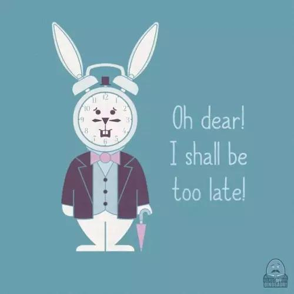

@美国留学中心

很多年前，上大学的时候，我给自己定了一个目标，我准备用三个学期完成普通同学四年才能完成的功课！
为了达到这个目标，我需要每学期修30–40个学分，而普通同学一学期只要修12–15个学分就可以。
看来，我要好好地规划一下自己的时间了。
那时候，我阅读了大量时间管理类的书籍，并且根据自己的实际情况加以实践。
最终，我真的只用了三个学期，在没参加夏校的情况下，就拿到了计算机科学和数学的双学士学位。
你一定以为我把所有的时间都用来学习了。但事实上，我每晚都能睡七八个小时，我会去购物，时常自己下厨，有自己的社交生活，每天早晨甚至还要锻炼30分钟。
在最后一学期，我修了37学分的专业课，还有一份每周要工作40个小时的全职工作（游戏编程），那时我还是当地计算机协会的副主席。毕业的时候，我的GPA为3.9。
我不是天才，身边没有私人老师，我考试的时候没有作弊，我也没有一个可以替我上课的双胞胎，而且，我不是精神病！！！
你一定超级好奇我是如何做到这一切的？
现在就告诉你答案！
Clarity is key.
目标清晰是关键。
首先你要明确知道你要的是什么。
如果目标不明确，那么就算在书桌前坐一天，你可能还是一事无成。
记住，你的目标制定的越细致越好，而且要把目标写在纸上。
要达成一个特定的目标，关键周期是90天。因为通常经过90天的努力，会取得比较明显的进步。
你可以想象一下，90天以后，你希望自己变成什么样子？你希望涨工资？还是减肥？还是交到新朋友？把它们写下来，越具体越好！
Be flexible.
灵活执行。
你不仅要知道自己的目标是什么，你还应该知道要如何达到这个目标。就像飞机虽然会偏离航线，但最终总会到达目的地，因为飞行员知道如何在必要的时候修正航线。
你不能盲目的执行计划，如果在执行计划的过程中出现了更好的选择，那么你需要审时度势，灵活对待，选择最佳的执行方案。
有一个清晰的长期目标，远比一个近期计划来的重要的多。上学期间，我非常明确自己的长期计划是：在三个学期内完成学业！但要达到这个目标，我的计划是在随时改变的。每天我都要面对新的的作业、项目、考试，我会根据实际情况，随时对计划作出调整。
Use single handling.
一次只做一件事。
有很多时间管理系统喜欢夸大其词，但我总是用一支笔一张纸来写自己的to-do list。
我把所有的作业和截止日期一条一条的列在纸上，无需做什么规划，按照时间的紧急程度，把这些事情逐条安排在空闲的时间里，做完以后，划掉就好。
如果我有一份要花费10个小时来完成的学期作业，那么我会一次写完，而不是分成好几次来完成。通常我会选择在周末完成这些大项目。我会在早晨去图书馆查资料，然后回到寝室开始写作，直到完成最后一页。不管这个作业有多复杂，也不管教授给我们预留了多久的时间来完成，只要我开始做这个作业，我会一直写下去，直到写完为止。
这样一个简单的习惯为我节省了大量的时间。首先，我可以专注于每一项工作，专注可以提高效率。 记住，任务转换是非常耗时间的。其次，这个习惯也让我得以彻底的放松，因为一旦完成，我就无需再为这个任务烦恼。
Do it now!
现在就做！
做决定的时候越快越好！我有一个“60秒原则”，对于一个一定要做出的决定，不管它有多重要，只要我已经准备好了，我就会要求自己在60秒内做出决定。
上大学的时候，我根本没时间去考虑什么时间做作业，基本上我都是拿起一个作业马上就开始做。
做决定要果断，优柔寡断就是浪费时间。哪怕做出的决定是错的，你也会迅速在失败中吸取教训，继续前进。
Triage ruthlessly.
该放弃时就放弃。
上大学的时候，我曾经拒绝参加一名教授的的计算机项目，因为我觉得这个项目一点儿用处也没有，还需要我做将近20个小时的杂活，完全是浪费时间。而它只占这门课10%的成绩，换句话说，顶多我的成绩就是从A变成A-了呗。
事实上，这门课我最后真的得了A-，但我给自己打了个A+，因为我把这20个小时用到了更有意义的地方。

Identify and recover wasted time.
把浪费掉的时间弥补回来。
如果我们在电视上看节目，一定会被广告耽误很多时间。但如果我们在网上看的话，就可以跳过广告，节省时间。同理，如果能打电话解决的事情，就不要发邮件来来回回耽误时间。
大学第二学期和第三学期之间的那个夏天，我发现校外有一栋公寓距离我上课的工程大楼比我在校内的宿舍还要近，我果断搬进这栋公寓，节省了不少路上的时间。我从原本的三人间搬进了一个人的小公寓，这也让我效率提高，因为我可以一边写着编程作业，一边做饭。因为课桌距离烤炉只有几步远。。
Apply the 80–20 rule.
80–20法则。
Pareto Principle告诉我们，可以用20%的精力去完成80%的工作，这也意味着要用80%的精力去完成20%的工作。
上大学的时候，我严格遵守了这项原理。我逃了40%的课，因为对我来说，坐在教室里听课并不是学习的最有效率的方法。有一门数学课，我总共就去了两次，分别是期中考试和期末考试，因为我自己看书自学的速度更快。其他同学大部分都循规蹈矩的上课，他们没有按照自己的特点安排学习。
Guard the time.
捍卫属于你的时间。
刚才我提过，一大段专心致志的时间是非常宝贵的。所以一定要誓死捍卫。在这段时间里不要让别人打扰到你，你可以把宿舍门锁上，或者干脆自己搬出来住。我自己就是这么干的。
Eat and exercise for optimal energy.
通过饮食和锻炼来获得最佳状态。
大学最后一个学期之前的暑假，我成了素食主义者。因为吃肉的人需要更多时间来消化。换句话说，吃肉的人工作效率会降低。有节制的饮食可以让人更加有效的学习和工作。
锻炼也是如此，上大学的时候每天早晨我会去跑步30分钟，这不仅帮助我保持良好的身材，也让我的身体和精力处在一个比较好的状态。
美国留学中心搜狐媒体平台上的所有文章，除了标明文章来源的，其他所有内容皆为主页菌外网翻译整理而来或者纯原创，转载请标明来源，禁止任何媒体及机构的肆意抄袭！！！
此表单为大家提问专用。提问戳http://offermachine.indexedu.com/diyevaluate/mobileNew/?n=597